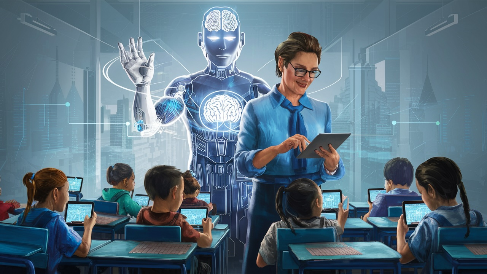

Professores e Inteligência Artificial: Uma Análise Crítica
Vivemos em uma era em que a Inteligência Artificial (IA) está transformando, profundamente todos os aspectos da nossa vida. Na educação, essa revolução é especialmente promissora, mas também levanta importantes questões...
Benefícios da IA na Docência
- Otimização do Planejamento de Aulas: A IA pode auxiliar significativamente na elaboração de planos de aula, fornecendo modelos genéricos que podem ser facilmente adaptados às necessidades específicas e individualizadas de cada turma e aluno.
- Agilidade na Avaliação e Feedback: Com o suporte da IA, a correção de avaliações torna-se mais eficiente, liberando tempo valioso para o professor e possibilitando a entrega de feedbacks rápidos e construtivos aos alunos.
- Expansão do Acesso a Conteúdo: A inteligência artificial facilita a localização e a tradução de materiais didáticos em diversos idiomas, enriquecendo o repertório de recursos disponíveis para professores e alunos.

Pontos positivos
Desafios e Pontos de Atenção
- Preocupações com Plágio e Fontes: A facilidade de geração de conteúdo pela IA levanta questões sobre plágio e a confiabilidade das fontes, exigindo uma curadoria atenta por parte do professor.
- Risco de Dependência e Menor Esforço Intelectual: O uso excessivo da IA pode levar à dependência dos alunos, diminuindo a iniciativa em pesquisar e desenvolver soluções por conta própria, o que pode comprometer o estímulo ao esforço intelectual.
- Padronização e Generalização das Atividades: Existe o risco de que a automação na criação de tarefas resulte em atividades mais padronizadas e genéricas, limitando a criatividade e a diversidade pedagógica.
- Limitações em Aspectos Humanos da Docência: Apesar da sua potência no processamento de dados e geração de respostas, a IA possui limitações intrínsecas em aspectos fundamentais da prática docente, como o cuidado emocional, a leitura aprofundada de contextos sociais e culturais, a empatia e a mediação de conflitos. A interação humana e a capacidade de compreender nuances continuam sendo insubstituíveis.
No geral, a IA é uma ferramenta poderosa, mas é crucial que professores e alunos a utilizem de forma consciente e crítica...